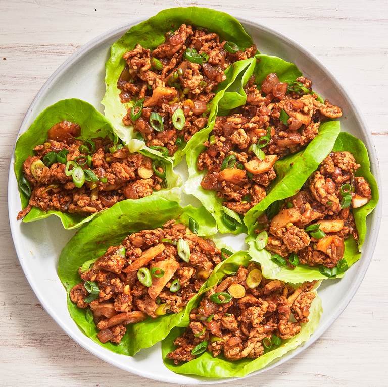

Lettuce Wraps

Description:
These lettuce wraps are bursting with flavour, delicious, and a great idea for a family-style meal. To serve,
allow each person to spoon a portion of the beef mixture into a lettuce leaf. Wrap the lettuce
around the beef like a burrito and enjoy!
Ingredients:
- 16 Boston Bibb Lettuce Leaves
- 1 Lb of Lean Ground Beef
- 1 Tbsp of Cooking Oil
- 1 Large Onion (Chopped)
- 1/4 Cup of Hoisin Sauce
- 2 Cloves of Fresh Garlic (Minced)
- 1 Tbsp of Soy Sauce
- 1 Tbsp of Rice Wine Vinegar
- 2 Tsp of Minced Pickled Ginger
- 1 Can of Water Chestnuts (Drained and Finely Chopped)
- 1 Bunch of Green Onions (Chopped)
- 2 Tsp of Asian Sesame Oil (Dark)
Steps:
- Rinse whole lettuce leaves and pat dry, being careful not to tear them; set aside.
- Heat oil in a large skillet over medium-high heat. Add beef; cook and stir until browned and crumbly,
5 to 7 minutes. Drain and discard grease; transfer beef to a bowl. Add onion to the same skillet; cook
and stir until just tender, 5 to 7 minutes.
- Stir in hoisin sauce, garlic, soy sauce, vinegar, ginger, and chile pepper sauce until well combined.
Add water chestnuts, green onions, sesame oil, and cooked beef; cook and stir until the onions just begin
to wilt, about 2 minutes.
- Arrange lettuce leaves around the outer edge of a large serving platter; spoon beef mixture in the center.